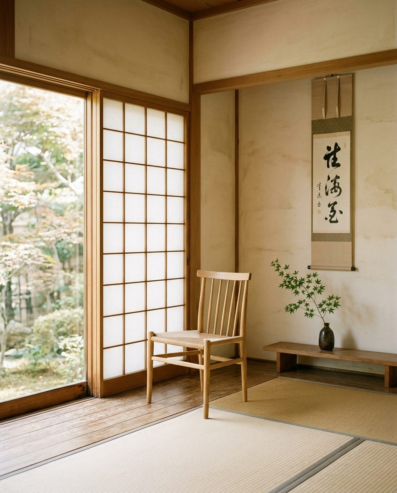

空気を「止めない」だけで、
人前はもっと自由になる。
うまく話そうとしているのに、なぜかうまくいかない。話し終えると、どっと疲れている——。それは話し方ではなく、「空気との距離感」の問題かもしれません。
まずは20分、話してみる いきなり申し込まなくて大丈夫です。LINEから個別相談へ。空気を「止めない」だけで、人前はもっと自由になる。
うまく話そうとしているのに、なぜかうまくいかない。話し終えると、どっと疲れている——。それは話し方の問題ではなく、「空気との距離感」がまだつかめていないだけかもしれません。
まずは20分、話してみる いきなり申し込まなくて大丈夫です。LINEから個別相談へ。 空気を味方につけて話せる表現講座 ／ 全4回・少人数制
うまく話そうとしているのに、なぜかうまくいかない。それは話し方が下手なのではなく、「空気との距離感」がまだつかめていないだけかもしれません。